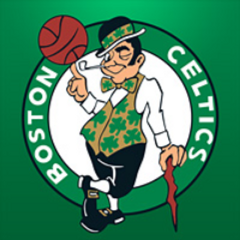

The Boston Celtics are on a roll after defeating the Charlotte Hornets in Charlotte 108-100. That puts them 4-0 in the preason and with the regular season right around the corner the Celtics seem ready to rock and roll this season.
It seems the new Celtics point guard Kyrie Irving is feeling the new system well after he went 7-11 with 16 points and 10 assists in the last preseaon game for the Celtics.
The Celtics new roster looks great even though only four returning players are from last seasons Boston Celtics. Head coach Brad Stevens has Celtics fans pumped up to see the true starting line up for the Celtics and to see how the seasom unfolds. It will be a great year for the Celtics and I am personal very excited to see how it unfolds.
